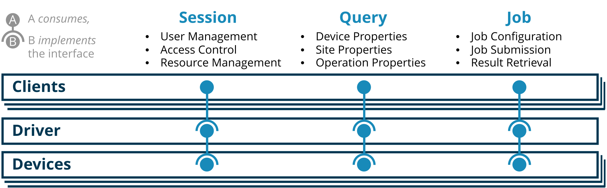

|
QDMI v1.3.0-dev
Quantum Device Management Interface
|
|
QDMI v1.3.0-dev
Quantum Device Management Interface
|
During the development of QDMI, we had to make several design decisions, which we want to outline in the following. This page is supposed to serve as a reference to why things are as they are in QDMI. Simultaneously, it should help to get a better understanding of the principles of QDMI. To this end, this page is useful for everyone working with QDMI.

QDMI interfaces three different entities, namely:
These entities are connected via two interfaces that allow the communication between the entities. We call those interfaces the QDMI Device Interface and the QDMI Client Interface. In the following, we will explain the responsibilities of the entities and the interfaces.
Devices (also commonly called "backends") represent actual quantum devices or simulators. Each device provides an implementation of the structs and functions defined by the QDMI Device Interface. In particular, this includes implementations of types for sites, operations, device jobs, and device sessions. Handles to these types are passed across the interface as opaque pointers, which means that only the device knows the actual implementation of those types.
Clients are the users of the QDMI library that want to interact with the devices. They use the functions defined by the client interface to interact with the devices. The clients do not have direct access to the devices but must go through what we refer to as a "driver". This is to ensure that the devices are used in a controlled manner and that the clients do not interfere with each other. The clients can create sessions with the driver to gain access to the devices.
The driver is the component that manages all available devices and provides access to them for the clients. It implements the structs and functions defined by the QDMI Client Interface. In particular, this includes implementations of types for sessions and jobs. Handles to these types are passed across the interface to clients as opaque pointers, which means that only the driver knows the actual implementation of those types. It is up to the driver how it exposes the QDMI Device Interface implementation provided by the devices as part of the QDMI Client Interface. For example, the driver could load the devices as dynamic libraries and translate the calls from the client to the devices or statically link the devices into the driver. An example implementation using dynamic libraries is provided in the examples directory of the QDMI repository.
As depicted in the schematic above, device and client interfaces each have three parts, namely:
The session interface is used to establish a connection between two entities. The client creates a session with the driver, and the driver creates sessions with the devices it manages. The main purpose of the session interface is to handle the authentication and authorization of the clients at the driver and the driver at the devices.
The query interface is used to retrieve information from the devices. The client can query the devices for information about the device itself, its sites, or its operations. Most importantly, this allows clients to discover the capabilities as well as constraints of the devices and to make informed decisions about how to use them. The information flow in the query interface is always from the device to the client via the driver. The driver may cache or modify any information returned by the device before passing it to the client.
The job interface is used to control the execution of jobs on the devices. Most jobs will be quantum circuits that the client wants to execute on the device. However, the job interface is not limited to quantum circuits and can be used to control any kind of computation on the device, such as calibrations. The client creates a job with the driver, and the driver delegates the job to the device. The device executes the job and reports the results back to the client via the driver. The information flow in the job interface is bidirectional. The client can control the job execution and retrieve the results of the job. The driver may cache or modify any information returned by the device before passing it to the client.
Throughout QDMI, we frequently use opaque pointers to represent objects such as sessions, jobs, devices, sites, and operations. Opaque pointers are pointers to a data structure that is not defined in the header file. The actual implementation is only known to the entity that defines the object. Opaque pointers have several advantages: They allow changing the internal representation of the object without breaking the client code, which makes the interface more stable and easier to maintain. Opaque pointers also prevent the client from accessing or modifying the internal representation of the object, which can help to prevent bugs and security vulnerabilities. Finally, opaque pointers are strongly typed, which can help to catch type errors at compile time. Opaque pointers also come with some disadvantages: They require an additional level of indirection in the implementation, which can lead to a performance overhead compared to direct implementations of the types.
Publicly defining the internal representation of the objects would be an alternative to using opaque pointers. However, this would expose the internal details of the objects to the client and would limit the flexibility of the implementation as well as the ability to change the internal representation of the objects while maintaining binary compatibility.
Yet another alternative would be to use integer IDs to represent the objects, for example, by using Universally Unique Identifiers (UUIDs). However, this would require additional bookkeeping in implementations to map the IDs to the actual objects. It would also make the interface less type-safe. In contrast, opaque pointers effectively serve as type-safe IDs that are checked statically by the compiler.
The design of the function signatures and semantics in QDMI is heavily inspired by the design of the OpenCL API for parallel programming of heterogeneous systems. As such, QDMI heavily relies on enumerations to define properties of devices, sessions, jobs, sites, and operations. For each type of property, a corresponding enumeration is defined. The value of a property is retrieved by calling a function with the property enumeration as an argument.
A generic function signature for querying the value of a property type <prop> from an object <obj> looks like this:
Here, QDMI_<obj> is the opaque pointer type of the object (for example, QDMI_Device, QDMI_Session, QDMI_Job, QDMI_Site, or QDMI_Operation). QDMI_<prop> is the enumeration type of the property (for example, QDMI_Session_Property, QDMI_Device_Property, QDMI_Site_Property, or QDMI_Operation_Property). The function retrieves the value of the property <prop> from the object <obj> identified by the handle handle. The value of the property is stored in the memory region pointed to by value, which has a size of size bytes. The actual size of the value written to the memory region is stored in the variable pointed to by size_ret. The function returns an error code indicating success or failure. The value is purposely passed as a void * to allow the function to return values of different types. The type of the value is determined by the property enumeration.
This design has several advantages:
Similar design principles are applied to the functions for setting parameters and retrieving results of jobs.
Each device must add a unique prefix to all symbols and types defined within its implementation. This is necessary to facilitate static linking of multiple device implementations as part of one driver. It also helps to identify the source of an error when debugging because the name of the symbol will contain the prefix of the device that defined it. The prefix is also used to avoid naming conflicts between different devices. Lastly, it allows hardware vendors to brand their device implementations. Prefixes must be unique across all devices. They should be short and descriptive of the device.
Per default, devices do not know which client is calling one of their functions. This is intentional to keep the devices as simple as possible and to avoid the need for complex authentication and authorization mechanisms on the device level. However, the device implementations may want to expose different capabilities or access modes depending on the client that is calling them. To this end, the QDMI_Device_Session was introduced. The driver creates a session with the device for the client. The driver can set parameters on the session to identify the client to the device and unlock specific features.
This allows device implementers to switch API tokens or endpoints on the fly, without having to recompile and redistribute the respective implementation. It also allows them to limit the access of certain clients to specific features of the device. For example, a device implementation could provide a read-only mode for clients that are not authorized to run jobs on the device.
QDMI defines two kinds of sessions, namely QDMI_Session and QDMI_Device_Session. The typical workflow for working with both kinds of sessions involves allocating a session, optionally setting parameters on the session, and then initializing the session. This three-step process was chosen to allow for more flexibility in authentication and authorization mechanisms, similar to how we designed the query interface to be compact and extensible.
QDMI defines two kinds of jobs, namely QDMI_Device_Job and QDMI_Job. A QDMI client will only ever get access to a QDMI_Job that it can request via QDMI_device_create_job from a QDMI_Device handle that it received from the driver. Internally, the driver will use the QDMI Device Job Interface to create a corresponding QDMI_Device_Job. In this sense, the QDMI_Job is a request to the driver to execute a job on the device. The driver will then translate this request into a QDMI_Device_Job and execute it on the device. As part of that translation, the driver may decide to modify the job or add additional information to it. This is also why two kinds of job parameters exist, namely QDMI_Job_Parameter and QDMI_Device_Job_Parameter. A device may allow the driver to configure more parameters than the client is allowed to set. The client will only ever see the QDMI_Job and not the QDMI_Device_Job. Thus, the client cannot interfere with the execution of the job on the device. This would not be possible if there were only one kind of job.
Generally, enum definitions are placed in the header file where they are used. For example, if an enum is only used in the QDMI Client Interface, such as QDMI_Job_Parameter, it is defined in the client.h header. Enumerations that are used across both the QDMI Client Interface and the QDMI Device Interface, such as QDMI_Device_Property, are defined in the constants.h header, which both interfaces include. There is one exception to the above rule: Enumerations that are only used in the QDMI Device Interface, such as QDMI_Device_Job_Parameter, are also centrally defined in the constants.h header. If this were not the case, each device implementation would have to define the same enumeration, each with a different prefix. It would also not be possible for the driver to know about all the different values of the enumeration. Additionally, when linking all devices statically into the driver, the name-shifted header for each device must be included. If each device would define the enumerations anew, this would lead to a compile-time error.
Originally, QDMI only defined a single kind of site, which was used to represent a location that can potentially hold a qubit. Already from the start, we intentionally avoided using the term Qubit to refer to their location, as on some devices, e.g., neutral atom-based ones, a site must not necessarily hold an atom representing the qubit. Hence, a site is more general than a qubit and can represent any kind of location that can hold a qubit, such as a superconducting qubit, a neutral atom, or a trapped ion. However, when extending the QDMI support for neutral atom-based devices, we realized that this was not general enough. These devices offer global operations that execute on multiple atoms within a given zone simultaneously. In particular, these global operations cannot be executed on individual atoms but on all atoms within a zone at once. Consequently, we had to equip QDMI such that it is capable of reporting operation properties with respect to zones and not only individual qubit positions. To this end, we introduced the concept of zone sites that represent a spatial zone. These have the same type as regular sites, i.e., QDMI_Site, but are used to represent a zone instead of a single qubit position. Hence, they can be used in the function QDMI_device_query_operation_property as parameter to query data like fidelity or duration of global operations specific to a zone. The function QDMI_device_query_device_property will return a list of all, i.e., regular and zone sites, for the property QDMI_DEVICE_PROPERTY_SITES. Overall, these modifications allow QDMI to represent the capabilities of neutral atom-based devices while keeping the interface consistent with the existing site concept.